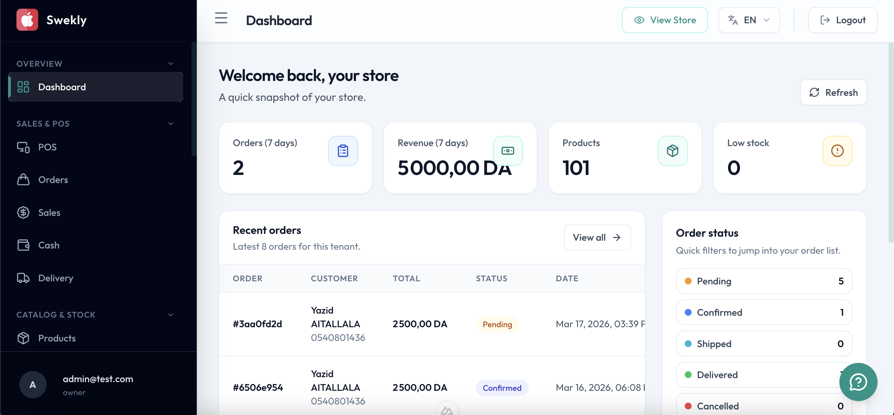
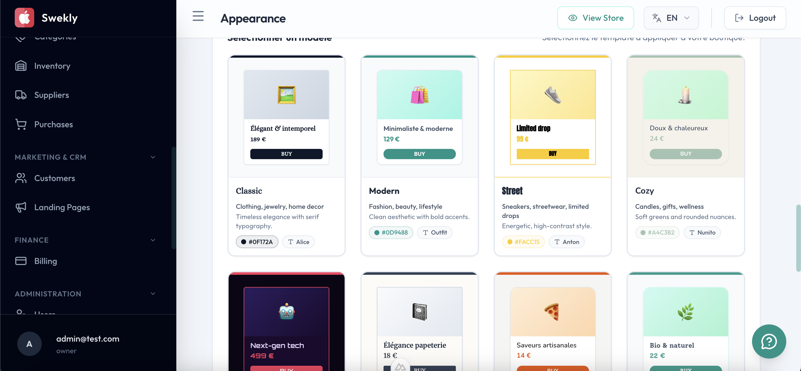
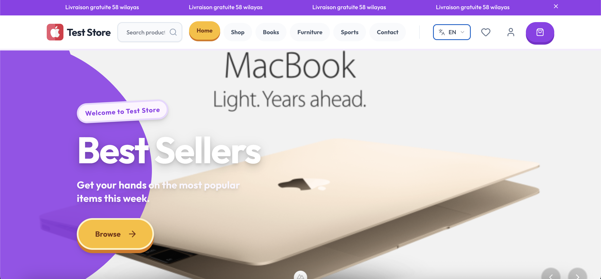
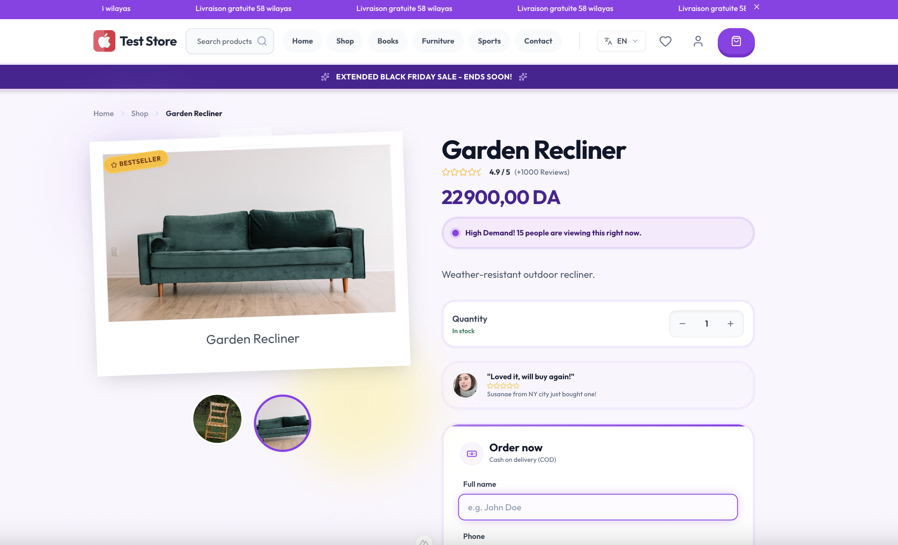

Overview
Swekly is a comprehensive multi-tenant SaaS e-commerce platform that offers a robust role-based administrative suite for centralized inventory and order management. It features localized delivery integrations (Yalidine, Maystro), comprehensive multi-language support (Arabic, French, English), and a secure, tenant-scoped data architecture to ensure absolute data consistency and privacy across the platform.
Key Features
- Multi-tenant architecture with fully isolated store environments and custom domain support.
- Premium storefront engine with server-side rendering for superior SEO.
- Localized delivery integrations with Yalidine and Maystro for automated logistics.
- COD-first checkout workflows optimized for the Algerian market.
- Robust role-based administrative suite for centralized management.
- Comprehensive multi-language support (Arabic, French, English) with full RTL.
Workflow
- Retailers sign up and launch isolated store environments with their own branding and domains.
- Customers enjoy a high-performance, mobile-first shopping experience with localized COD checkout.
- Admins manage global inventory, orders, and carrier integrations through a centralized dashboard.
Tech Stack
- Nuxt 3 & Vue 3 powering the web storefront and admin suite.
- Flutter for high-performance Desktop, iOS, and Android applications.
- Express, Prisma ORM, and PostgreSQL for a secure, tenant-scoped backend.
- Tailwind CSS, Pinia, AWS S3, and REST APIs for a modern, scalable architecture.
Integrations & Operations
- Yalidine & Maystro delivery integrations for automated shipment and tracking.
- Localized workflows for Algerian logistics and wilaya-based pricing.
- Comprehensive security and data consistency across all tenant stores.
Highlights
- Server-side rendering (SSR) for superior SEO and performance.
- High-performance mobile and desktop apps built with Flutter.
- Fully isolated tenant data for absolute privacy and consistency.
Gallery




